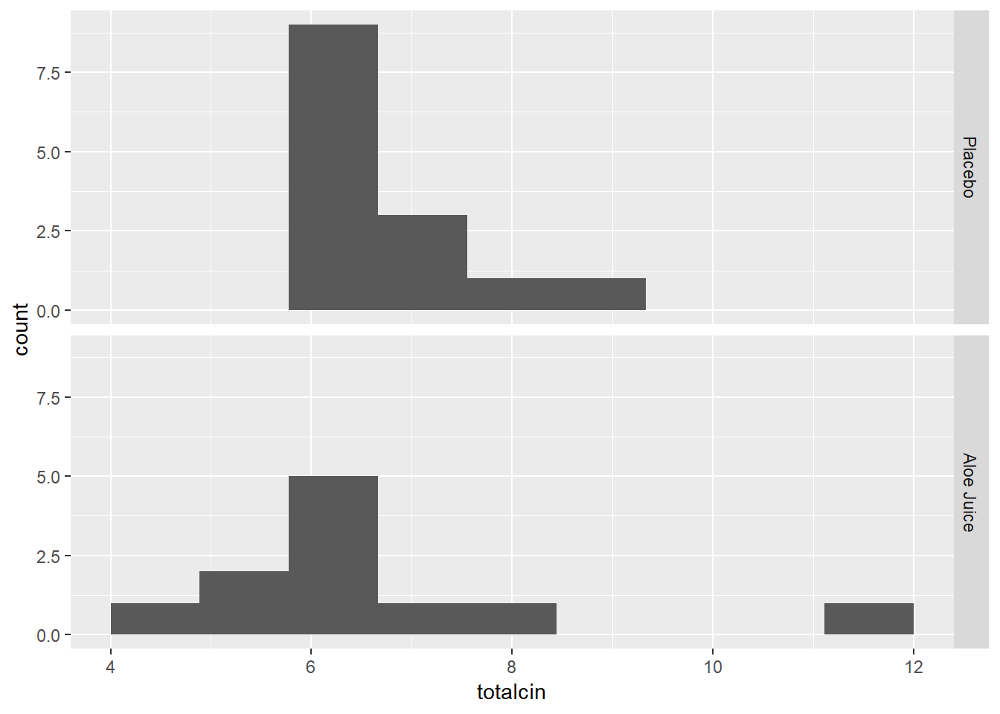
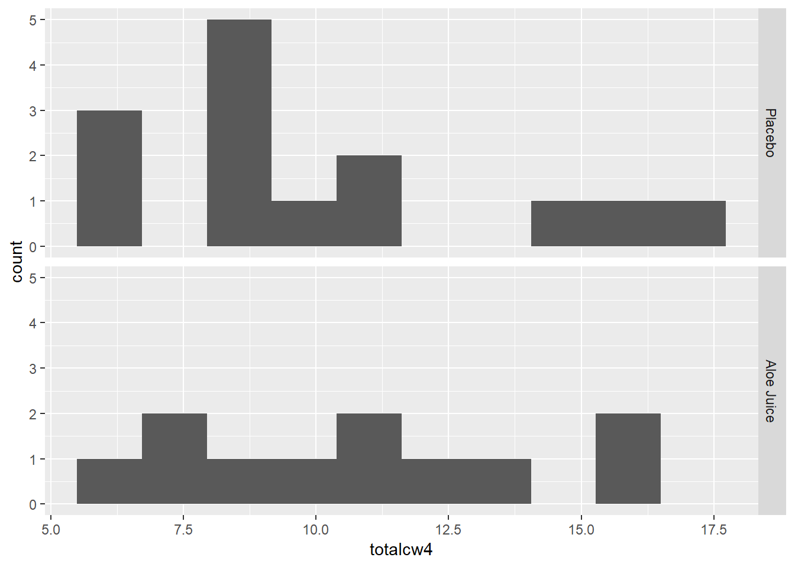
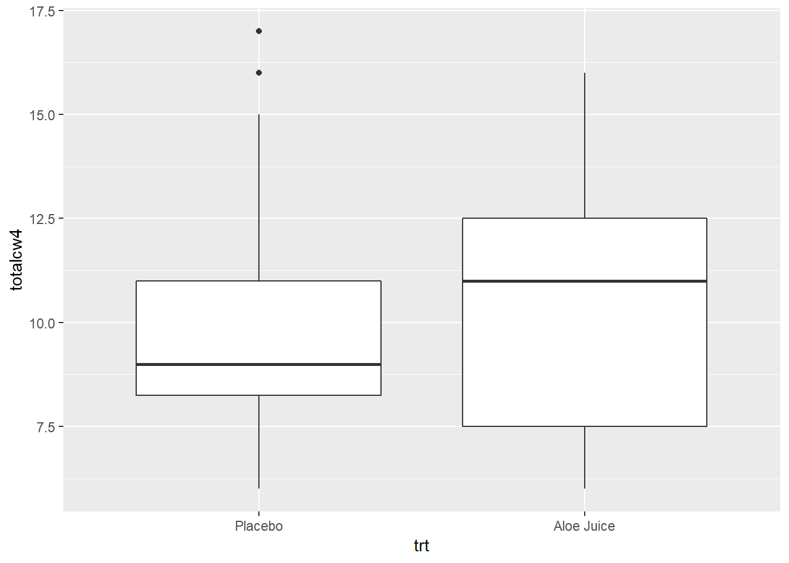
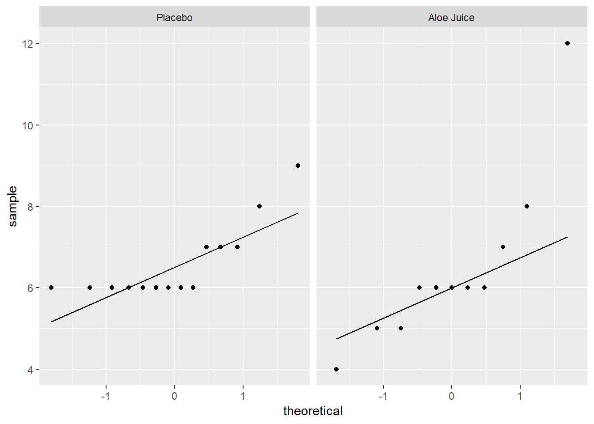

2 TWO INDEPENDENT SAMPLES t-TEST: for the Difference in MEANS
2.1 Background
2.1.1 Required Packages
library(tidyverse) # Loads several very helpful 'tidy' packages
library(haven) # Read in SPSS datasets
library(car) # Companion for Applied Regression (and ANOVA)2.1.2 Example Dataset - Cancer Experiment
The Cancer dataset was introduced in “t TEST FOR THE MEAN OF 1 SAMPLE”.
cancer_raw <- haven::read_spss("https://raw.githubusercontent.com/CEHS-research/eBook_ANOVA/master/data/Cancer.sav")
tibble::glimpse(cancer_raw)Observations: 25
Variables: 9
$ ID <dbl> 1, 5, 6, 9, 11, 15, 21, 26, 31, 35, 39, 41, 45, 2, 12...
$ TRT <dbl> 0, 0, 0, 0, 0, 0, 0, 0, 0, 0, 0, 0, 0, 0, 1, 1, 1, 1,...
$ AGE <dbl> 52, 77, 60, 61, 59, 69, 67, 56, 61, 51, 46, 65, 67, 4...
$ WEIGHIN <dbl> 124.0, 160.0, 136.5, 179.6, 175.8, 167.6, 186.0, 158....
$ STAGE <dbl> 2, 1, 4, 1, 2, 1, 1, 3, 1, 1, 4, 1, 1, 2, 4, 1, 2, 1,...
$ TOTALCIN <dbl> 6, 9, 7, 6, 6, 6, 6, 6, 6, 6, 7, 6, 8, 7, 6, 4, 6, 6,...
$ TOTALCW2 <dbl> 6, 6, 9, 7, 7, 6, 11, 11, 9, 4, 8, 6, 8, 16, 10, 6, 1...
$ TOTALCW4 <dbl> 6, 10, 17, 9, 16, 6, 11, 15, 6, 8, 11, 9, 9, 9, 11, 8...
$ TOTALCW6 <dbl> 7, 9, 19, 3, 13, 11, 10, 15, 8, 7, 11, 6, 10, 10, 9, ...cancer_clean <- cancer_raw %>%
dplyr::rename_all(tolower) %>%
dplyr::mutate(id = factor(id)) %>%
dplyr::mutate(trt = factor(trt,
labels = c("Placebo",
"Aloe Juice"))) %>%
dplyr::mutate(stage = factor(stage))
tibble::glimpse(cancer_clean)Observations: 25
Variables: 9
$ id <fct> 1, 5, 6, 9, 11, 15, 21, 26, 31, 35, 39, 41, 45, 2, 12...
$ trt <fct> Placebo, Placebo, Placebo, Placebo, Placebo, Placebo,...
$ age <dbl> 52, 77, 60, 61, 59, 69, 67, 56, 61, 51, 46, 65, 67, 4...
$ weighin <dbl> 124.0, 160.0, 136.5, 179.6, 175.8, 167.6, 186.0, 158....
$ stage <fct> 2, 1, 4, 1, 2, 1, 1, 3, 1, 1, 4, 1, 1, 2, 4, 1, 2, 1,...
$ totalcin <dbl> 6, 9, 7, 6, 6, 6, 6, 6, 6, 6, 7, 6, 8, 7, 6, 4, 6, 6,...
$ totalcw2 <dbl> 6, 6, 9, 7, 7, 6, 11, 11, 9, 4, 8, 6, 8, 16, 10, 6, 1...
$ totalcw4 <dbl> 6, 10, 17, 9, 16, 6, 11, 15, 6, 8, 11, 9, 9, 9, 11, 8...
$ totalcw6 <dbl> 7, 9, 19, 3, 13, 11, 10, 15, 8, 7, 11, 6, 10, 10, 9, ...psych::headTail(cancer_clean) id trt age weighin stage totalcin totalcw2 totalcw4 totalcw6
1 1 Placebo 52 124 2 6 6 6 7
2 5 Placebo 77 160 1 9 6 10 9
3 6 Placebo 60 136.5 4 7 9 17 19
4 9 Placebo 61 179.6 1 6 7 9 3
5 <NA> <NA> ... ... <NA> ... ... ... ...
6 42 Aloe Juice 73 181.5 0 8 11 16 <NA>
7 44 Aloe Juice 67 187 1 5 7 7 7
8 50 Aloe Juice 60 164 2 6 8 16 <NA>
9 58 Aloe Juice 54 172.8 4 7 8 10 82.2 Exploratory Data Analysis: i.e. the eyeball method
Do the two groups, treatment and control, have different oral conditions at initial observation? What about four weeks later?
Judge any difference in centers (means) within the context of the within group spread (stadard deviation/variance)
2.2.1 Means and SDs
cancer_clean %>%
dplyr::group_by(trt) %>%
furniture::table1(totalcin, totalcw4,
na.rm = FALSE)
--------------------------------
trt
Placebo Aloe Juice
n = 14 n = 11
totalcin
6.6 (0.9) 6.5 (2.1)
totalcw4
10.1 (3.6) 10.6 (3.5)
--------------------------------2.2.2 Stacked Histograms
2.2.2.1 Baseline Oral Condition
cancer_clean %>%
ggplot(aes(totalcin)) +
geom_histogram(bins = 10) +
facet_grid(trt ~ .)
2.2.2.2 Four Weeks Oral Condition
cancer_clean %>%
ggplot(aes(totalcw4)) +
geom_histogram(bins = 10) +
facet_grid(trt ~ .)
2.2.3 Side-by-Side Boxplots
2.2.3.1 Baseline Oral Condition
cancer_clean %>%
ggplot(aes(x = trt,
y = totalcin)) +
geom_boxplot()
2.2.3.2 Four Weeks Oral Condition
cancer_clean %>%
ggplot(aes(x = trt,
y = totalcw4)) +
geom_boxplot()
2.3 Assumptions
2.3.1 Independence
BOTH Samples were drawn INDEPENDENTLY at random (at least as representative as possible)
- Nothing can be done to fix NON-representative samples!
- Can not for with any statistically test
- If idenpendence is violated, you may want to use a paired-samples t-test
2.3.2 Normality
A variable is said to follow the normal distribution if it resembles the normal curve. Specifically it is symetrical, unimodal, and bell shaped.
The continuous variable has a NORMAL distribution in BOTH populations
- Not as important if the sample is large (Central Limit Theorem)
- IF the sample is far from normal &/or small, might want to use a different method
Options to judging normality:
- Visualization of each sample’s distribution
- Stacked histograms, but is sensitive to binning choices (number or width)
- Side-by-side boxplots, shows median instead of mean as central line
- Seperate QQ plots (straight \(45^\circ\) line), but is sensitive to outliers!
- Calculate Skewness and Kurtosis, within each group
- Divided each value by its standard error (SE)
- A result \(\gt \pm 2\) indicates issues
- Divided each value by its standard error (SE)
- Formal Inferencial Tests for Normality, on each group
- Null-hypothesis: population is normally distributed
- A \(p \lt .05\) ???indicate snon-normality
- For smaller samples, use Shapiro-Wilk’s Test
- For larger samples, use Kolmogorov-Smirnov’s Test
2.3.2.1 Baseline Oral Condition
cancer_clean %>%
ggplot(aes(sample = totalcin)) + # make sure to include "sample = "
geom_qq() + # layer on the dots
stat_qq_line() + # layer on the line
facet_grid(. ~ trt) # panel by group
cancer_clean %>%
dplyr::filter(trt == "Placebo") %>% # select one group
dplyr::pull(totalcin) %>% # extract the continuous variable
shapiro.test() # test for normality
Shapiro-Wilk normality test
data: .
W = 0.6807, p-value = 0.0002349cancer_clean %>%
dplyr::filter(trt == "Aloe Juice") %>% # select one group
dplyr::pull(totalcin) %>% # extract the continuous variable
shapiro.test() # test for normality
Shapiro-Wilk normality test
data: .
W = 0.78534, p-value = 0.006034Shapiro-Wilk’s tests yield evidence that baseline oral condition is NOT normally distributed in the placebo group, W = .681, p <.001, nor the treatment group, W = .785, p = .006. Visual inspection suggests that violatioins may by more extreme in the placebo group.
2.3.2.2 Four Weeks Oral Condition
cancer_clean %>%
ggplot(aes(sample = totalcw4)) + # make sure to include "sample = "
geom_qq() + # layer on the dots
stat_qq_line() + # layer on the line
facet_grid(. ~ trt) # panel by group
cancer_clean %>%
dplyr::filter(trt == "Placebo") %>% # select one group
dplyr::pull(totalcw4) %>% # extract the continuous variable
shapiro.test() # test for normality
Shapiro-Wilk normality test
data: .
W = 0.88272, p-value = 0.06356cancer_clean %>%
dplyr::filter(trt == "Aloe Juice") %>% # select one group
dplyr::pull(totalcw4) %>% # extract the continuous variable
shapiro.test() # test for normality
Shapiro-Wilk normality test
data: .
W = 0.92906, p-value = 0.4014Shapiro-Wilk’s tests yielded no evidence that oral condition is NOT normally distributed four weeks after baseline in the placebo group, \(W = .883, p = .064\), and the treatment group, \(W = .929, p = .401\).
2.3.3 HOV
Two Populations exhibit Homogeneity of Variance (HOV), i.e. have about the same amount of spread
Before performing the \(t\) test, check to see if the assumption of homogeneity of variance is met using Levene’s Test. For a independent samples t-test for means, the groups need to have the same amount of spread (SD) in the measure of interest.
Use the car:leveneTest() function tests the HOV assumtion.
Inside the funtion you need to specify at least three options (sepearated by commas):
-
the formula:
continuous_var ~ grouping_var(replace with your variable names) -
the dataset:
data = .to pipe it from above -
the center:
center = “mean”since we are comparing means
2.3.3.1 Baseline Oral Condition
Do the participants in the treatment and control groups have the same spread in oral condition at BASELINE?
cancer_clean %>%
car::leveneTest(totalcin ~ trt, # formula: continuous_var ~ grouping_var
data = ., # pipe in the dataset
center = "mean") # The default is "median"Levene's Test for Homogeneity of Variance (center = "mean")
Df F value Pr(>F)
group 1 2.2103 0.1507
23 No violations of homogeneity were detected, \(F(1, 23) = 2.210, p = .151\).
2.3.3.2 Four Weeks Oral Condition
Do the participants in the treatment and control groups have the same spread in oral condition at the FOURTH WEEK?
cancer_clean %>%
car::leveneTest(totalcw4 ~ trt, # formula: continuous_var ~ grouping_var
data = ., # pipe in the dataset
center = "mean") # The default is "median"Levene's Test for Homogeneity of Variance (center = "mean")
Df F value Pr(>F)
group 1 0 0.995
23 No violations of homogeneity were detected, \(F(1, 23) = 0, p = .995\).
2.4 Inference
Formal Statistical Test: t-Test for Difference in Independent Group Means
Use the same t.test() funtion we have used for a single sample, but speficy a few more options.
Inside the funtion you need to specify at least three options (sepearated by commas):
-
the formula:
continuous_var ~ grouping_var(replace with your variable names)
-
the dataset:
data = .to pipe it from above
You MAY need/want to specify some or all of the following options you may way to leave as the default or override:
-
HOV assumed:
-
var.equal = FALSEDefault Seperate-Variance test using Welch’s df
-
var.equal = TRUEPooled-Variance test (if HOV is NOT violated)
-
-
Number of tails:
-
alternative = “two.sided”Default Allows for a 2-sided alternative -
alternative = “less”Only Allows: group 1 < group 2 -
alternative = “greater”Only Allows: group 1 > group 2
-
-
Independent vs. paired:
-
paired = FALSEDefault Conducts an INDEOENDENT groups t-Test
-
paired = TRUEConducts a PAIRED meausres t-Test
-
-
Confidence level:
-
conf.level = 0.95Default Computes the 95% confidence inverval
-
conf.level = 0.90Changes to a 90% confidence interval
-
2.4.1 Pooled Variance Test
Use when there are no violations of HOV
2.4.1.1 Baseline Oral Condition
Do the participants in the treatment group have a different average oral condition at BASELINE, compared to the control group?
# Minimal syntax
cancer_clean %>%
t.test(totalcin ~ trt, # formula: continuous_var ~ grouping_var
data = ., # pipe in the dataset
var.equal = TRUE) # HOV was violated (option = TRUE)
Two Sample t-test
data: totalcin by trt
t = 0.18566, df = 23, p-value = 0.8543
alternative hypothesis: true difference in means is not equal to 0
95 percent confidence interval:
-1.185479 1.419245
sample estimates:
mean in group Placebo mean in group Aloe Juice
6.571429 6.454545 No evidence of a differnece in mean oral condition at baseline, \(t(23) = 0.186, p = .854\). Note: this test may be unreliable due to the non-normality of the samll samples.
2.4.1.2 Four Weeks Oral Condition
Do the participants in the treatment group have a different average oral condition at the FOURTH WEEK, compared to the control group?
# Fully specified function
cancer_clean %>%
t.test(totalcw4 ~ trt, # formula: continuous_var ~ grouping_var
data = ., # pipe in the dataset
var.equal = TRUE, # default: HOV was violated (option = TRUE)
alternative = "two.sided", # default: 2 sided (options = "less", "greater")
paired = FALSE, # default: independent (option = TRUE)
conf.level = .95) # default: 95% (option = .9, .90, ect.)
Two Sample t-test
data: totalcw4 by trt
t = -0.34598, df = 23, p-value = 0.7325
alternative hypothesis: true difference in means is not equal to 0
95 percent confidence interval:
-3.444215 2.457202
sample estimates:
mean in group Placebo mean in group Aloe Juice
10.14286 10.63636 No evidence of a differnece in mean oral condition at the fourth week, \(t(23) = -0.350, p = .733\).
2.4.2 Seperate Variance Test
Use if there are violations of HOV or the samples are difference sizes